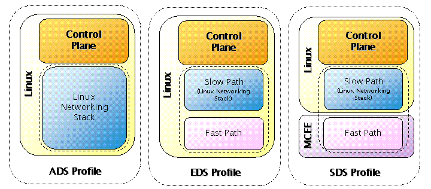
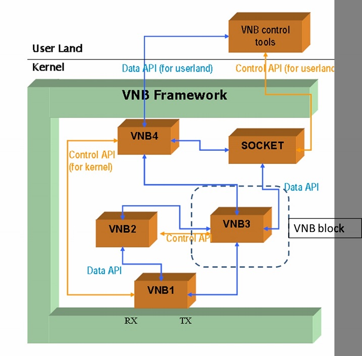
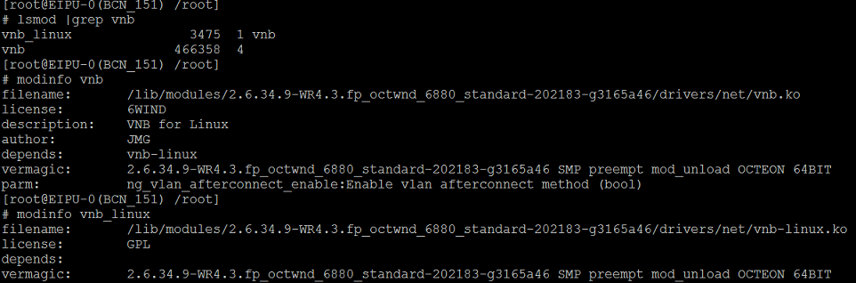
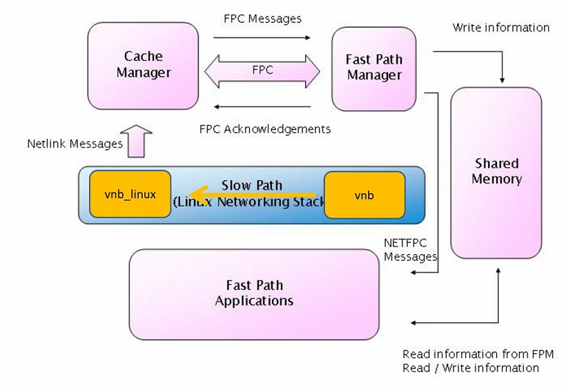
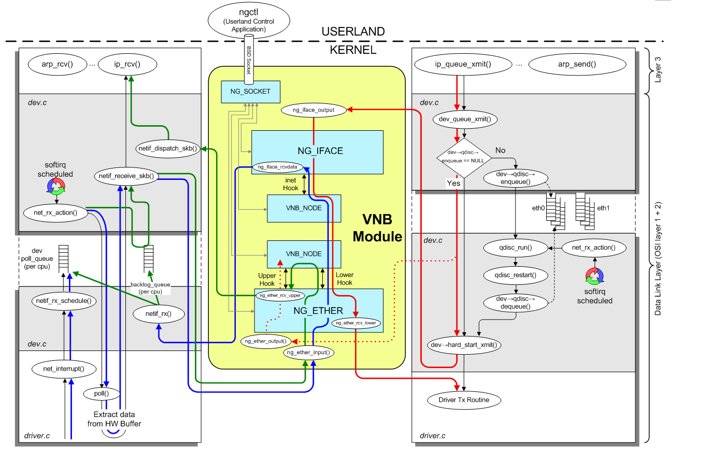
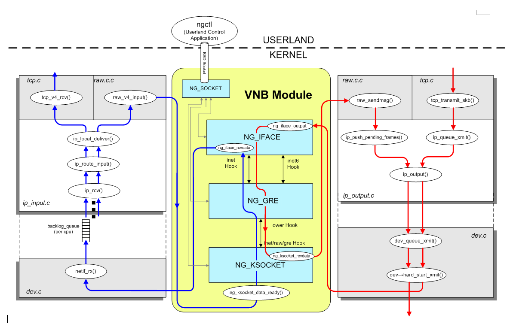

<?xml version="1.0" encoding="utf-8"?>
<!DOCTYPE html PUBLIC "-//W3C//DTD XHTML 1.0 Strict//EN"
               "http://www.w3.org/TR/xhtml1/DTD/xhtml1-strict.dtd">
<html xmlns="http://www.w3.org/1999/xhtml" lang="en" xml:lang="en">
<head>
<title>VNB </title>
<meta http-equiv="Content-Type" content="text/html;charset=utf-8"/>
<meta name="title" content="VNB "/>
<meta name="generator" content="Org-mode"/>
<meta name="generated" content="2014-01-03T23:59+0800"/>
<meta name="author" content="Kevin Gao"/>
<meta name="description" content=""/>
<meta name="keywords" content=""/>
<style type="text/css">
 <!--/*--><![CDATA[/*><!--*/
  html { font-family: Times, serif; font-size: 12pt; }
  .title  { text-align: center; }
  .todo   { color: red; }
  .done   { color: green; }
  .tag    { background-color: #add8e6; font-weight:normal }
  .target { }
  .timestamp { color: #bebebe; }
  .timestamp-kwd { color: #5f9ea0; }
  .right  {margin-left:auto; margin-right:0px;  text-align:right;}
  .left   {margin-left:0px;  margin-right:auto; text-align:left;}
  .center {margin-left:auto; margin-right:auto; text-align:center;}
  p.verse { margin-left: 3% }
  pre {
	border: 1pt solid #AEBDCC;
	background-color: #F3F5F7;
	padding: 5pt;
	font-family: courier, monospace;
        font-size: 90%;
        overflow:auto;
  }
  table { border-collapse: collapse; }
  td, th { vertical-align: top;  }
  th.right  { text-align:center;  }
  th.left   { text-align:center;   }
  th.center { text-align:center; }
  td.right  { text-align:right;  }
  td.left   { text-align:left;   }
  td.center { text-align:center; }
  dt { font-weight: bold; }
  div.figure { padding: 0.5em; }
  div.figure p { text-align: center; }
  div.inlinetask {
    padding:10px;
    border:2px solid gray;
    margin:10px;
    background: #ffffcc;
  }
  textarea { overflow-x: auto; }
  .linenr { font-size:smaller }
  .code-highlighted {background-color:#ffff00;}
  .org-info-js_info-navigation { border-style:none; }
  #org-info-js_console-label { font-size:10px; font-weight:bold;
                               white-space:nowrap; }
  .org-info-js_search-highlight {background-color:#ffff00; color:#000000;
                                 font-weight:bold; }
  /*]]>*/-->
</style><link rel="stylesheet" type="text/css" href="http://kevinfhell.github.io/worg.css">
<script type="text/javascript">
/*
@licstart  The following is the entire license notice for the
JavaScript code in this tag.

Copyright (C) 2012-2013 Free Software Foundation, Inc.

The JavaScript code in this tag is free software: you can
redistribute it and/or modify it under the terms of the GNU
General Public License (GNU GPL) as published by the Free Software
Foundation, either version 3 of the License, or (at your option)
any later version.  The code is distributed WITHOUT ANY WARRANTY;
without even the implied warranty of MERCHANTABILITY or FITNESS
FOR A PARTICULAR PURPOSE.  See the GNU GPL for more details.

As additional permission under GNU GPL version 3 section 7, you
may distribute non-source (e.g., minimized or compacted) forms of
that code without the copy of the GNU GPL normally required by
section 4, provided you include this license notice and a URL
through which recipients can access the Corresponding Source.


@licend  The above is the entire license notice
for the JavaScript code in this tag.
*/
<!--/*--><![CDATA[/*><!--*/
 function CodeHighlightOn(elem, id)
 {
   var target = document.getElementById(id);
   if(null != target) {
     elem.cacheClassElem = elem.className;
     elem.cacheClassTarget = target.className;
     target.className = "code-highlighted";
     elem.className   = "code-highlighted";
   }
 }
 function CodeHighlightOff(elem, id)
 {
   var target = document.getElementById(id);
   if(elem.cacheClassElem)
     elem.className = elem.cacheClassElem;
   if(elem.cacheClassTarget)
     target.className = elem.cacheClassTarget;
 }
/*]]>*///-->
</script>

</head>
<body>
<div id="org-div-home-and-up" style="text-align:right;font-size:70%;white-space:nowrap;">
 <a accesskey="h" href="#"> UP </a>
 |
 <a accesskey="H" href="theindex.html"> HOME </a>
</div>

<div id="preamble">

</div>

<div id="content">
<h1 class="title">VNB </h1>


<div id="table-of-contents">
<h2>Table of Contents</h2>
<div id="text-table-of-contents">
<ul>
<li><a href="#sec-1">Overview</a>
<ul>
<li><a href="#sec-1-1">Content</a></li>
<li><a href="#sec-1-2">Entity in our equipment</a>
<ul>
<li><a href="#sec-1-2-1">Slow path</a>
<ul>
<li><a href="#sec-1-2-1-1">Two kernel modules</a></li>
</ul>
</li>
<li><a href="#sec-1-2-2">Fast path</a></li>
</ul></li>
</ul>
</li>
<li><a href="#sec-2">Node and hook</a>
<ul>
<li><a href="#sec-2-1">Node</a>
<ul>
<li><a href="#sec-2-1-1">ng_type</a></li>
<li><a href="#sec-2-1-2">refs</a></li>
<li><a href="#sec-2-1-3">private data</a></li>
</ul>
</li>
<li><a href="#sec-2-2">Hooks</a>
<ul>
<li><a href="#sec-2-2-1">Data structure</a></li>
</ul></li>
</ul>
</li>
<li><a href="#sec-3">Data flow</a>
<ul>
<li><a href="#sec-3-1">Data message</a></li>
<li><a href="#sec-3-2">Control message</a></li>
<li><a href="#sec-3-3">Flow in graph</a></li>
<li><a href="#sec-3-4">In our equipment</a></li>
<li><a href="#sec-3-5">Slow path</a></li>
<li><a href="#sec-3-6">Fastpath</a></li>
<li><a href="#sec-3-7">Flags in ip link</a>
<ul>
<li><a href="#sec-3-7-1">fpout</a>
<ul>
<li><a href="#sec-3-7-1-1">whether goto fastpath with fptun</a></li>
</ul>
</li>
<li><a href="#sec-3-7-2">infra</a>
<ul>
<li><a href="#sec-3-7-2-1">Whether handled by nfhook.</a></li>
</ul></li>
</ul></li>
</ul>
</li>
<li><a href="#sec-4">Net graph configuration</a>
<ul>
<li><a href="#sec-4-1">CM is responsible for sync the configuration from slowpath to fastpath</a>
<ul>
<li><a href="#sec-4-1-1">The configuation from kernel</a></li>
<li><a href="#sec-4-1-2">Call tracing</a></li>
<li><a href="#sec-4-1-3">The configuration from ngctl</a></li>
<li><a href="#sec-4-1-4">call tracing</a></li>
<li><a href="#sec-4-1-5">About the vlan handling</a></li>
</ul></li>
</ul>
</li>
<li><a href="#sec-5">One testing result</a>
<ul>
<li><a href="#sec-5-1">TCP packet testing result</a></li>
<li><a href="#sec-5-2">bottle neck</a></li>
</ul>
</li>
<li><a href="#sec-6">Code tracing</a>
<ul>
<li><a href="#sec-6-1">TX direction</a>
<ul>
<li><a href="#sec-6-1-1">VLAN interface with fpout flag</a>
<ul>
<li><a href="#sec-6-1-1-1">Code tracing</a></li>
</ul>
</li>
<li><a href="#sec-6-1-2">VLAN interface without fpout flag</a></li>
</ul>
</li>
<li><a href="#sec-6-2">RX direction</a></li>
</ul>
</li>
</ul>
</div>
</div>

<div id="outline-container-1" class="outline-2">
<h2 id="sec-1">Overview</h2>
<div class="outline-text-2" id="text-1">

<p><b>Virtual Networking Blocks</b> technology (VNB) is an enhancement of Linux
Networking stack to make kernel software development modular and
extensible.  VNB concept has also been extended by 6WIND to Fast Path
to bring similar benefits and architecture for Fast Path-less 6WIND
solutions (6WINDGate ADS) and Fast Path-based solutions (6WINDGate EDS
and 6WINDGate SDS);

</p>
</div>

<div id="outline-container-1-1" class="outline-3">
<h3 id="sec-1-1">Content</h3>
<div class="outline-text-3" id="text-1-1">

<p>   
    A VNB Block is made by a node, which is a processing
unit and one or more hooks, which are interconnection units.  Data
packets flow bi-directionally along hooks from node to node. When a
node receives a data packet, it performs some processing on it, and
then (usually) forwards it to another node. The processing may be
something as simple as adding/removing headers, or it may be more
complicated or involve other parts of the system such as userland
control modules.
</p></div>

</div>

<div id="outline-container-1-2" class="outline-3">
<h3 id="sec-1-2">Entity in our equipment</h3>
<div class="outline-text-3" id="text-1-2">


</div>

<div id="outline-container-1-2-1" class="outline-4">
<h4 id="sec-1-2-1">Slow path</h4>
<div class="outline-text-4" id="text-1-2-1">


</div>

<div id="outline-container-1-2-1-1" class="outline-5">
<h5 id="sec-1-2-1-1">Two kernel modules</h5>
<div class="outline-text-5" id="text-1-2-1-1">

<p>
</p><ul>
<li>the location of vnb_linux
    /SS_6Wind/src/6WINDGate/COMPONENTS/np/vnb/sys/netgraph_linux
</li>
<li>the location of vnb
</li>
</ul>

<p>   /SS_6Wind/src/6WINDGate/COMPONENTS/np/vnb/sys/netgraph
</p></div>
</div>

</div>

<div id="outline-container-1-2-2" class="outline-4">
<h4 id="sec-1-2-2">Fast path</h4>
<div class="outline-text-4" id="text-1-2-2">

<p>There are only flow handling mechanism in fast path, all the Nodes
and hooks are created and synchronized from slow path, sync path is 
   
</p></div>
</div>
</div>

</div>

<div id="outline-container-2" class="outline-2">
<h2 id="sec-2">Node and hook</h2>
<div class="outline-text-2" id="text-2">

<p>Node creation flow:
take ng_ether as example:
ng_ether_attach&ndash;&gt;ng_make_node_common
                         &ndash;&gt;malloc priviate date
                         &ndash;&gt;registe node private date
the node name and interface name is the same
</p>
</div>

<div id="outline-container-2-1" class="outline-3">
<h3 id="sec-2-1">Node</h3>
<div class="outline-text-3" id="text-2-1">


<pre class="example">/*
 * Structure of a node
 */
struct ng_node {
    char   *name;       /* optional globally unique name */
    struct  ng_type *type;  /* the installed 'type' */
    int flags;      /* see below for bit definitions */
    vnb_atomic_t    refs;   /* number of references to this node */
    u_int   numhooks;   /* number of hooks */
    int colour;     /* for graph colouring algorithms */
    void   *private;    /* node type specified information */
    ng_ID_t     ID; /* Unique per node */
    LIST_HEAD(hooks, ng_hook) hooks;    /* linked list of node hooks */
    LIST_ENTRY(ng_node)   nodes;    /* linked list of all nodes for linear search */
    LIST_ENTRY(ng_node)   namenodes;    /* linked list of all nodes for name hash */
    LIST_ENTRY(ng_node)   idnodes;  /* ID hash collision list */
};
typedef struct ng_node *node_p;
</pre>


</div>

<div id="outline-container-2-1-1" class="outline-4">
<h4 id="sec-2-1-1">ng_type</h4>
<div class="outline-text-4" id="text-2-1-1">

<p>The structure that contail type specificed informations
include the name,eg: ether, and all method pointers  
</p>


<pre class="example">/*
 * Structure of a node type
 */
struct ng_type {

    u_int32_t   version;    /* must equal NG_VERSION */
    const char  *name;      /* Unique type name */
    void *  mod_event;  /* not used */
    ng_constructor_t *constructor;  /* Node constructor */
    ng_rcvmsg_t *rcvmsg;    /* control messages come here */
    ng_shutdown_t   *shutdown;  /* reset, and free resources */
    ng_newhook_t    *newhook;   /* first notification of new hook */
    ng_findhook_t   *findhook;  /* only if you have lots of hooks */
    ng_connect_t    *connect;   /* final notification of new hook */
    ng_connect_t    *afterconnect;  /* final notification of new hook */
    ng_rcvdata_t    *rcvdata;   /* date comes here */
    ng_rcvdata_t    *rcvdataq;  /* or here if being queued */
    ng_disconnect_t *disconnect;    /* notify on disconnect */
    ng_rcvexception_t *rcvexception; /* exceptions come here */

    const struct    ng_cmdlist *cmdlist;    /* commands we can convert */

    /* R/W data private to the base netgraph code DON'T TOUCH! */
    LIST_ENTRY(ng_type) types;      /* linked list of all types */
    int         refs;       /* number of instances */
};

</pre>

</div>

</div>

<div id="outline-container-2-1-2" class="outline-4">
<h4 id="sec-2-1-2">refs</h4>
<div class="outline-text-4" id="text-2-1-2">

<p>    An atomic operated number, that is used to idendify, whether some
    node are used by private date
</p></div>

</div>

<div id="outline-container-2-1-3" class="outline-4">
<h4 id="sec-2-1-3">private data</h4>
<div class="outline-text-4" id="text-2-1-3">

<p>    The node type specified information, all supported hook pointer
    is stored here. 
</p>


<pre class="example">/* Per-node private data */
struct private {
    struct ifnet    *ifp;       /* associated interface */
    hook_p      upper;      /* upper hook connection */
    hook_p      lower;      /* lower OR orphan hook connection */
    hook_p      lower_in[NG_ETHER_MAX_LOWER_IN];    /* lower input hooks */
    u_char      lowerOrphan;    /* whether lower is lower or orphan */
    u_char      autoSrcAddr;    /* always overwrite source address */
    uint8_t     promisc;    /* promiscuity counter */
#ifdef __FreeBSD__
    u_long      hwassist;   /* hardware checksum capabilities */
#endif
};
typedef struct private *priv_p;


</pre>

</div>
</div>

</div>

<div id="outline-container-2-2" class="outline-3">
<h3 id="sec-2-2">Hooks</h3>
<div class="outline-text-3" id="text-2-2">

<p>The process of create a hook for some node
take ng_vlan as an example
ng_vlan_newhook&ndash;&gt;Get the private of the node
                             &ndash;&gt;Check different type of hook
</p>


<pre class="example">/* Hook names */
#define NG_VLAN_HOOK_LOWER        "lower"    /* the lower hook */
#define NG_VLAN_HOOK_LINK_PREFIX  "link_"    /* append decimal integer */
#define NG_VLAN_HOOK_LINK_FMT     "link_%d"  /* for use with printf(3),
                                                %d is the tag           */
#define NG_VLAN_HOOK_NOMATCH      "nomatch"  /* the unknown packets */
#define NG_VLAN_HOOK_ORPHANS      "orphans"  /* the unknown tags */
</pre>

<p>
                             &ndash;&gt;allocate the hook name, eg:link_807
                             &ndash;&gt;registe the per link private data
</p>


<pre class="example">/* Store tag value in private zone of each hook */
struct ng_vlan_hook_private {
    uint16_t tag;
    uint8_t dscp_enable;
    uint8_t nfmark_enable;
    uint8_t dscp_to_priority[DSCP_MAX_SIZE];
    uint8_t nfmark_to_priority[NFMARK_MAX_SIZE];
    uint8_t pko_internal_port;
#define DEFAULT_VLAN_PKO_PORT   0xff
};
</pre>

<p>
                             &ndash;&gt;store the hook pointer into the
                             node's private
                             &ndash;&gt;registe the receive data hook
</p>
<p>
The process of connect hook
ng_connect
</p>


<pre class="example">if (hook2-&gt;hook_rcvdata)
    hook1-&gt;peer_rcvdata = hook2-&gt;hook_rcvdata;
else
    hook1-&gt;peer_rcvdata = hook2-&gt;node-&gt;type-&gt;rcvdata;
</pre>


</div>

<div id="outline-container-2-2-1" class="outline-4">
<h4 id="sec-2-2-1">Data structure</h4>
<div class="outline-text-4" id="text-2-2-1">


<pre class="example">/*
 * Structure of a hook
 */
struct ng_meta;

struct ng_hook {
    struct  ng_hook *peer;  /* the other end of this link */
    int (*peer_rcvdata)(struct ng_hook *, struct mbuf *, struct ng_meta *);
    int (*hook_rcvdata)(struct ng_hook *, struct mbuf *, struct ng_meta *);
    void   *private;    /* node dependant ID for this hook */
#ifdef NG_NODE_CACHE
    void   *node_cache;     /* node dependant cache info for this hook */
#endif
    void   *node_private;   /* pointer to node private structure */
    int flags;      /* info about this hook/link */
    int refs;       /* dont actually free this till 0 */
    char   *name;       /* what this node knows this link as */
    struct  ng_node *node;  /* The node this hook is attached to */
    LIST_ENTRY(ng_hook) hooks;  /* linked list of all hooks on node */
    LIST_ENTRY(ng_hook) namehooks; /* linked list of hooks for name hash */
};
typedef struct ng_hook *hook_p;

</pre>


</div>
</div>
</div>

</div>

<div id="outline-container-3" class="outline-2">
<h2 id="sec-3">Data flow</h2>
<div class="outline-text-2" id="text-3">


</div>

<div id="outline-container-3-1" class="outline-3">
<h3 id="sec-3-1">Data message</h3>
<div class="outline-text-3" id="text-3-1">

<p>Data Messages are passed in mbuf chains along the edges in the VNB
Graph, one edge at a time. Each VNB Node decides how to handle data
coming in on its hooks. In fact, mostly, the hook decide how to
handle the date, but exactly speaking, the hook is also part of the node.
</p>


<pre class="example">hook-&gt;hook_rcvdata = ng_vlan_rcv_tag;
</pre>

</div>

</div>

<div id="outline-container-3-2" class="outline-3">
<h3 id="sec-3-2">Control message</h3>
<div class="outline-text-3" id="text-3-2">


<pre class="example">.rcvmsg =     ng_vlan_rcvmsg,           /* control messages come here */
</pre>

</div>

</div>

<div id="outline-container-3-3" class="outline-3">
<h3 id="sec-3-3">Flow in graph</h3>
<div class="outline-text-3" id="text-3-3">

<p>the message(both data and control) is deleverred by function call, but
not queue or mailbox. 
eg:  A wishes to send a data mbuf to neighboring VNB
Node B, it calls the generic VNB data delivery function.  This
function in turn locates VNB Node B and calls B's receive data
method
Communication between VNB Nodes is based on the "send and forget" principle. Any VNB Node sending
information on a hook from VNB Node A to VNB Node B is managed by node B only. This means:
</p><ul>
<li>In case of error, node B will free the mbuf and return a code error.
</li>
<li>In nominal case, node B will return 0.
</li>
<li>In both cases, node A should not use m reference anymore (granted by the use of
</li>
</ul>

<p>NG_SEND_DATA).
</p></div>

</div>

<div id="outline-container-3-4" class="outline-3">
<h3 id="sec-3-4">In our equipment</h3>
<div class="outline-text-3" id="text-3-4">

</div>

</div>

<div id="outline-container-3-5" class="outline-3">
<h3 id="sec-3-5">Slow path</h3>
<div class="outline-text-3" id="text-3-5">

<p>

</p></div>

</div>

<div id="outline-container-3-6" class="outline-3">
<h3 id="sec-3-6">Fastpath</h3>
<div class="outline-text-3" id="text-3-6">

<p>Call trace
</p>


<pre class="example">fpn_main_loop()--&gt;fpn_process_input()--&gt;fp_process_input()--&gt;fp_ether_input()--&gt;ng_ether_input()  VNB--&gt;ng_send_data_fast()--&gt;ng_vlan_rcv_lower--&gt;ng_eiface_rcvdata() fp_ether_input()
                                                                                                                     --&gt;fp_ether_input_novnb()--&gt;fp_ip_input()--&gt;fp_ip_fwd_reass() --&gt;fp_ip_input2()--&gt; fp_ip_input2()--&gt;
                                                                                                                      fp_fast_ip_input2()--&gt; fp_fast_ip_input2()--&gt; fp_ip_input_local()--&gt; fp_ip_input_demux()--&gt; eitp_udp_input()

eitp_udp_output()--&gt;eitp_fp_ip_output()--&gt; fp_ip_send_fragment() --&gt;fp_ip_if_send()--&gt;fp_ether_output()--&gt;fp_if_output()--&gt;ng_eiface_output()  -- VNB--&gt; ng_send_data_fast()--&gt; ng_vlan_rcv_tag()--&gt; ng_vlan_rcv_tag()
--&gt; ng_ether_rcv_lower() -&gt;fp_if_output()                        
                                                                                                                                                             fpn_enqueue_packet()--&gt; fpn_octeon_enqueue_packet()--&gt; fpn_pko_send_packet_finish()

</pre>

</div>

</div>

<div id="outline-container-3-7" class="outline-3">
<h3 id="sec-3-7">Flags in ip link</h3>
<div class="outline-text-3" id="text-3-7">


</div>

<div id="outline-container-3-7-1" class="outline-4">
<h4 id="sec-3-7-1">fpout</h4>
<div class="outline-text-4" id="text-3-7-1">


</div>

<div id="outline-container-3-7-1-1" class="outline-5">
<h5 id="sec-3-7-1-1">whether goto fastpath with fptun</h5>
<div class="outline-text-5" id="text-3-7-1-1">

</div>
</div>

</div>

<div id="outline-container-3-7-2" class="outline-4">
<h4 id="sec-3-7-2">infra</h4>
<div class="outline-text-4" id="text-3-7-2">


</div>

<div id="outline-container-3-7-2-1" class="outline-5">
<h5 id="sec-3-7-2-1">Whether handled by nfhook.</h5>
<div class="outline-text-5" id="text-3-7-2-1">

</div>
</div>
</div>
</div>

</div>

<div id="outline-container-4" class="outline-2">
<h2 id="sec-4">Net graph configuration</h2>
<div class="outline-text-2" id="text-4">


</div>

<div id="outline-container-4-1" class="outline-3">
<h3 id="sec-4-1">CM is responsible for sync the configuration from slowpath to fastpath</h3>
<div class="outline-text-3" id="text-4-1">


</div>

<div id="outline-container-4-1-1" class="outline-4">
<h4 id="sec-4-1-1">The configuation from kernel</h4>
<div class="outline-text-4" id="text-4-1-1">

<p>The following devices are from kernel
<div style="height:200px;overflow:auto;border-style:solid;border-width:1px">

<pre class="example">1: lo: &lt;LOOPBACK,UP,RUNNING,LOWER_UP&gt; &lt;INFRA&gt; mtu 16436 qdisc noqueue
    link/loopback 00:00:00:00:00:00 brd 00:00:00:00:00:00
    IPv4 forwarding: on IPv6 forwarding: off
    IPv4 force reassembly: no IPv6 force reassembly: no
2: mgmt0: &lt;BROADCAST,MULTICAST,UP,RUNNING,LOWER_UP&gt; mtu 1500 qdisc pfifo_fast qlen 1000
    link/ether 00:d0:c9:c5:f5:06 brd ff:ff:ff:ff:ff:ff
    IPv4 forwarding: on IPv6 forwarding: off
    IPv4 force reassembly: no IPv6 force reassembly: no
3: tunl0: &lt;NOARP&gt; mtu 1480 ttl 0 tos 0x0 qdisc noop
    link/ipip 0.0.0.0 brd 0.0.0.0
    IPv4 forwarding: on IPv6 forwarding: on
    IPv4 force reassembly: no IPv6 force reassembly: no
4: svti_cfg@NONE: &lt;POINTOPOINT,MULTICAST,NOARP&gt; mtu 16416 ttl 0 tos 0x0 qdisc noop
    link/svti 0.0.0.0 peer 0.0.0.0
    IPv4 forwarding: on IPv6 forwarding: on
    IPv4 force reassembly: no IPv6 force reassembly: no
5: ip6tnl0: &lt;NOARP&gt; mtu 1460 ttl 0 tos 0x0 qdisc noop
    link/tunnel6 :: brd ::
    IPv4 forwarding: on IPv6 forwarding: on
    IPv4 force reassembly: no IPv6 force reassembly: no
6: xaui0: &lt;BROADCAST,MULTICAST,PROMISC,UP,RUNNING,LOWER_UP&gt; &lt;INFRA,FP_OUTPUT&gt; mtu 9000 qdisc noqueue
    link/ether 00:d0:c9:c5:f5:07 brd ff:ff:ff:ff:ff:ff
    IPv4 forwarding: on IPv6 forwarding: off
    IPv4 force reassembly: no IPv6 force reassembly: no
7: xaui1: &lt;BROADCAST,MULTICAST,PROMISC,UP,RUNNING,LOWER_UP&gt; mtu 9000 qdisc noqueue
    link/ether 00:d0:c9:c5:f5:08 brd ff:ff:ff:ff:ff:ff
    IPv4 forwarding: on IPv6 forwarding: off
    IPv4 force reassembly: no IPv6 force reassembly: no
8: oct0: &lt;BROADCAST,MULTICAST&gt; mtu 1500 qdisc noop
    link/ether 00:00:00:00:01:01 brd ff:ff:ff:ff:ff:ff
    IPv4 forwarding: on IPv6 forwarding: on
    IPv4 force reassembly: no IPv6 force reassembly: no
9: fpn0: &lt;BROADCAST,MULTICAST,NOARP,UP,RUNNING,LOWER_UP&gt; &lt;INFRA&gt; mtu 1500 qdisc noqueue
    link/ether 00:00:00:00:03:0c brd ff:ff:ff:ff:ff:ff
    IPv4 forwarding: on IPv6 forwarding: on
    IPv4 force reassembly: no IPv6 force reassembly: no
10: internal: &lt;BROADCAST,MULTICAST,UP,RUNNING,LOWER_UP&gt; &lt;INFRA&gt; mtu 9000 qdisc noqueue
    link/ether mode virtual 00:d0:c9:c5:f5:07 brd ff:ff:ff:ff:ff:ff
    IPv4 forwarding: off IPv6 forwarding: off
    IPv4 force reassembly: no IPv6 force reassembly: no

</pre>

</div>
</p></div>

</div>

<div id="outline-container-4-1-2" class="outline-4">
<h4 id="sec-4-1-2">Call tracing</h4>
<div class="outline-text-4" id="text-4-1-2">


<pre class="example">-&gt; register_netdev()
  -&gt; register_netdevice()   
     -&gt; call_netdevice_notifiers() : to protocols
     -&gt; rtmsg_ifinfo()  : to netlink
        -&gt; rtnl_notify() : RTNLGRP_LINK
           -&gt; nlmsg_notify() 
              -&gt; nlmsg_multicast()
                 -&gt; netlink_broadcast()
                    -&gt; do_one_broadcast()
                       -&gt; netlink_broadcast_deliver()
                          -&gt; __netlink_sendskb()

</pre>

</div>

</div>

<div id="outline-container-4-1-3" class="outline-4">
<h4 id="sec-4-1-3">The configuration from ngctl</h4>
<div class="outline-text-4" id="text-4-1-3">

<p>   The devices
<div style="height:200px;overflow:auto;border-style:solid;border-width:1px">

<pre class="example">10: internal: &lt;BROADCAST,MULTICAST,UP,RUNNING,LOWER_UP&gt; &lt;INFRA&gt; mtu 9000 qdisc noqueue
    link/ether mode virtual 00:d0:c9:c5:f5:07 brd ff:ff:ff:ff:ff:ff
    IPv4 forwarding: off IPv6 forwarding: off
    IPv4 force reassembly: no IPv6 force reassembly: no
11: ethtest20: &lt;BROADCAST,MULTICAST,UP,RUNNING,LOWER_UP&gt; &lt;FP_OUTPUT&gt; mtu 1500 qdisc noqueue
    link/ether mode virtual 00:d0:c9:c5:ac:ea brd ff:ff:ff:ff:ff:ff
    IPv4 forwarding: on IPv6 forwarding: off
    IPv4 force reassembly: no IPv6 force reassembly: no
12: rnchanet: &lt;BROADCAST,MULTICAST,UP,RUNNING,LOWER_UP&gt; &lt;FP_OUTPUT&gt; mtu 9000 qdisc noqueue
    link/ether mode virtual 00:d0:c9:c5:f5:07 brd ff:ff:ff:ff:ff:ff
    IPv4 forwarding: off IPv6 forwarding: off
    IPv4 force reassembly: no IPv6 force reassembly: no
13: cfeigw: &lt;BROADCAST,MULTICAST,UP,RUNNING,LOWER_UP&gt; &lt;FP_OUTPUT&gt; mtu 9000 qdisc noqueue
    link/ether mode virtual 00:d0:c9:c5:f5:07 brd ff:ff:ff:ff:ff:ff
    IPv4 forwarding: on IPv6 forwarding: off
    IPv4 force reassembly: no IPv6 force reassembly: no
</pre>

</div>
</p></div>

</div>

<div id="outline-container-4-1-4" class="outline-4">
<h4 id="sec-4-1-4">call tracing</h4>
<div class="outline-text-4" id="text-4-1-4">

<p>ngctl/*U≠kernel/*ƒ≠ 
(ng_eiface_rcvmsg()
ngclt(msg˙deviceŸˆ(register_netdevice()
·/«ngctlMnÑS(register_netdevice()$≠1
ç—ŸCMÜ
</p>


<pre class="example">main()
-&gt; fpm_init()
  -&gt; fpm_connect()
     -&gt; cm_init()
        -&gt; cm_netlink_cmd_init() : ngctl : NETLINK_ROUTE (Routing/device hook)
           -&gt; cm_netcmd: cm_nl_recv()
               -&gt; cm_nl_dispacth()
                  -&gt; cm_nl_link()
                     -&gt; cm_eth_create() # cm_iface_handler_lookup()
                        -&gt; cm2cp_iface_create()
                           -&gt; post_msg() : fpm_enqueue() : UNIX socket ---&gt; FPM
       -&gt; cm_netlink_route_init()  ==&gt; kernel : NETLINK_ROUTE (Routing/device hook)
          -&gt; cm_netlink: cm_nl_recv() 
</pre>


<div style="height:200px;overflow:auto;border-style:solid;border-width:1px">

<pre class="example"><span class="linenr"> 1:  </span>void cm_netlink_route_init(void)
<span class="linenr"> 2:  </span>{
<span class="linenr"> 3:  </span>    /*
<span class="linenr"> 4:  </span>     * We want to receive
<span class="linenr"> 5:  </span>     *    iface info
<span class="linenr"> 6:  </span>     *    addresses
<span class="linenr"> 7:  </span>     *    routes
<span class="linenr"> 8:  </span>     * This needs to be updated with additional
<span class="linenr"> 9:  </span>     * netlink resources
<span class="linenr">10:  </span>     */
<span class="linenr">11:  </span>    cm_netlink_sock (NETLINK_ROUTE,
<span class="linenr">12:  </span>            &amp;cm_netlink,
<span class="linenr">13:  </span>            (RTMGRP_LINK | RTMGRP_NEIGH | RTMGRP_NOTIFY |
<span class="linenr">14:  </span>             RTMGRP_IPV4_ROUTE | RTMGRP_IPV6_ROUTE |
<span class="linenr">15:  </span>             RTMGRP_IPV4_IFADDR | RTMGRP_IPV6_IFADDR
<span class="linenr">16:  </span>#ifdef RTNLGRP_VNB
<span class="linenr">17:  </span>             | RTMGRP_VNB
<span class="linenr">18:  </span>#endif
<span class="linenr">19:  </span>             ), 1, CM_BULK_READ);
<span class="linenr">20:  </span>}
<span class="linenr">21:  </span>
<span class="linenr">22:  </span>     _PF(CMD_RESET)
<span class="linenr">23:  </span>       _PF(CMD_FLUSH)
<span class="linenr">24:  </span>       _PF(CMD_IF_CREATE)
<span class="linenr">25:  </span>       _PF(CMD_IF_DELETE)
<span class="linenr">26:  </span>       _PF(CMD_IF_MTU)
<span class="linenr">27:  </span>       _PF(CMD_IF_STATE_UPDATE)
<span class="linenr">28:  </span>       _PF(CMD_IF_MAC)
<span class="linenr">29:  </span>       _PF(CMD_IF_BLADEINFO)
<span class="linenr">30:  </span>       _PF(CMD_IF_ADDR)
<span class="linenr">31:  </span>       _PF(CMD_IF_VRF_UPDATE)
<span class="linenr">32:  </span>       _PF(CMD_INTERFACE_IPV4_ADDR_ADD)
<span class="linenr">33:  </span>       _PF(CMD_INTERFACE_IPV4_ADDR_DEL)
<span class="linenr">34:  </span>       _PF(CMD_INTERFACE_IPV6_ADDR_ADD)
<span class="linenr">35:  </span>       _PF(CMD_INTERFACE_IPV6_ADDR_DEL)
<span class="linenr">36:  </span>       _PF(CMD_TUN_TTL)
<span class="linenr">37:  </span>       _PF(CMD_TUN_TOS)
<span class="linenr">38:  </span>       _PF(CMD_ROUTE4_ADD)
<span class="linenr">39:  </span>       _PF(CMD_ROUTE4_DEL)
<span class="linenr">40:  </span>       _PF(CMD_ROUTE6_ADD)
<span class="linenr">41:  </span>       _PF(CMD_ROUTE6_DEL)
<span class="linenr">42:  </span>       _PF(CMD_ARP_UPDATE)
<span class="linenr">43:  </span>       _PF(CMD_NDP_UPDATE)
<span class="linenr">44:  </span>       _PF(CMD_XIN4_CREATE)
<span class="linenr">45:  </span>       _PF(CMD_XIN4_DELETE)
<span class="linenr">46:  </span>       _PF(CMD_XIN4_UPDATE)
<span class="linenr">47:  </span>       _PF(CMD_XIN6_CREATE)
<span class="linenr">48:  </span>       _PF(CMD_XIN6_DELETE)
<span class="linenr">49:  </span>       _PF(CMD_XIN6_UPDATE)
<span class="linenr">50:  </span>       _PF(CMD_ISATAP_CREATE)
<span class="linenr">51:  </span>       _PF(CMD_ISATAP_DELETE)
<span class="linenr">52:  </span>       _PF(CMD_6TO4_START)
<span class="linenr">53:  </span>       _PF(CMD_6TO4_STOP)
<span class="linenr">54:  </span>       _PF(CMD_NATPT_ADD_PFX)
<span class="linenr">55:  </span>       _PF(CMD_NATPT_DEL_PFX)
<span class="linenr">56:  </span>       _PF(CMD_NATPT_ADD_ADDR)
<span class="linenr">57:  </span>       _PF(CMD_NATPT_DEL_ADDR)
<span class="linenr">58:  </span>       _PF(CMD_NATPT_ADD_SESSION)
<span class="linenr">59:  </span>       _PF(CMD_NATPT_DEL_SESSION)
<span class="linenr">60:  </span>       _PF(CMD_MCAST_START)
<span class="linenr">61:  </span>       _PF(CMD_MCAST_STOP)
<span class="linenr">62:  </span>       _PF(CMD_MCAST_ADD_VIF)
<span class="linenr">63:  </span>       _PF(CMD_MCAST_DEL_VIF)
<span class="linenr">64:  </span>       _PF(CMD_MCAST_ADD_MFC)
<span class="linenr">65:  </span>       _PF(CMD_MCAST_DEL_MFC)
<span class="linenr">66:  </span>       _PF(CMD_MCAST_JOIN_GROUP)
<span class="linenr">67:  </span>       _PF(CMD_MCAST_LEAVE_GROUP)
<span class="linenr">68:  </span>       _PF(CMD_NF_DISABLE)
<span class="linenr">69:  </span>       _PF(CMD_NF_UPDATE)
<span class="linenr">70:  </span>       _PF(CMD_NF_CTADD)
<span class="linenr">71:  </span>       _PF(CMD_NF_CTDELETE)
<span class="linenr">72:  </span>       _PF(CMD_NF_CTFLUSH)
<span class="linenr">73:  </span>       _PF(CMD_NF6_UPDATE)
<span class="linenr">74:  </span>       _PF(CMD_NF6_CTADD)
<span class="linenr">75:  </span>       _PF(CMD_NF6_CTDELETE)
<span class="linenr">76:  </span>       _PF(CMD_NF_CTDISABLE)
<span class="linenr">77:  </span>       _PF(CMD_IPSEC_SA_CREATE)
<span class="linenr">78:  </span>       _PF(CMD_IPSEC_SA_DELETE)
<span class="linenr">79:  </span>       _PF(CMD_IPSEC_SA_FLUSH)
<span class="linenr">80:  </span>       _PF(CMD_IPSEC_SA_REPLAYWIN)
<span class="linenr">81:  </span>       _PF(CMD_IPSEC_SP_CREATE)
<span class="linenr">82:  </span>       _PF(CMD_IPSEC_SP_DELETE)
<span class="linenr">83:  </span>       _PF(CMD_IPSEC_SP_FLUSH)
<span class="linenr">84:  </span>       _PF(CMD_PORT_CREATE)
<span class="linenr">85:  </span>       _PF(CMD_PORT_DELETE)
<span class="linenr">86:  </span>       _PF(CMD_PORT_STATE)
<span class="linenr">87:  </span>       _PF(CMD_SWITCH_STATE)
<span class="linenr">88:  </span>       _PF(CMD_SWITCH_BIND)
<span class="linenr">89:  </span>       _PF(CMD_SWITCH_UNBIND)
<span class="linenr">90:  </span>       _PF(CMD_SWITCHPORT_STATE)
<span class="linenr">91:  </span>       _PF(CMD_ADD_SNOOPING_ENTRY)
<span class="linenr">92:  </span>       _PF(CMD_DEL_SNOOPING_ENTRY)
<span class="linenr">93:  </span>       _PF(CMD_VNB_MSGHDR)
<span class="linenr">94:  </span>       _PF(CMD_BLADE_CREATE)
<span class="linenr">95:  </span>       _PF(CMD_BLADE_DELETE)
<span class="linenr">96:  </span>       _PF(CMD_BLADE_FPIB_IF_SET)
</pre>

</div>

</div>

</div>

<div id="outline-container-4-1-5" class="outline-4">
<h4 id="sec-4-1-5">About the vlan handling</h4>
<div class="outline-text-4" id="text-4-1-5">

<p>Çú
/fptunÑ•ávlanÅslowpathS 
Çú/fptun/ÅfpS  
slowpath_/(VNBÃπSÑ
</p></div>
</div>
</div>

</div>

<div id="outline-container-5" class="outline-2">
<h2 id="sec-5">One testing result</h2>
<div class="outline-text-2" id="text-5">


</div>

<div id="outline-container-5-1" class="outline-3">
<h3 id="sec-5-1">TCP packet testing result</h3>
<div class="outline-text-3" id="text-5-1">

<p>In two different box BCN513 _FPT_1.40.1.13
</p><table border="2" cellspacing="0" cellpadding="6" rules="groups" frame="hsides">
<colgroup><col class="left" /><col class="right" /><col class="right" /><col class="right" /><col class="right" /><col class="right" />
</colgroup>
<thead>
<tr><th scope="col" class="left">CSPU</th><th scope="col" class="right">sample 1</th><th scope="col" class="right">sample 2</th><th scope="col" class="right">sample 3</th><th scope="col" class="right">sample 4</th><th scope="col" class="right">average</th></tr>
</thead>
<tbody>
<tr><td class="left">rnchanet</td><td class="right">1.52</td><td class="right">1.55</td><td class="right">1.52</td><td class="right">1.53</td><td class="right">1.53</td></tr>
<tr><td class="left">xaui0</td><td class="right">2.55</td><td class="right">2.84</td><td class="right">2.48</td><td class="right">2.78</td><td class="right">2.6625</td></tr>
</tbody>
<tbody>
<tr><td class="left">EIPU</td><td class="right"></td><td class="right"></td><td class="right"></td><td class="right"></td><td class="right"></td></tr>
</tbody>
<tbody>
<tr><td class="left">rnchanet+fpout</td><td class="right">0.762</td><td class="right">0.784</td><td class="right">0.756</td><td class="right">0.825</td><td class="right">0.78175</td></tr>
<tr><td class="left">rnchanet+nofpout</td><td class="right">0.735</td><td class="right">0.683</td><td class="right">0.679</td><td class="right">0.76</td><td class="right">0.71425</td></tr>
<tr><td class="left">rnchanet+xaui0+nofpout</td><td class="right">0.732</td><td class="right">0.787</td><td class="right">0.766</td><td class="right">0.755</td><td class="right">0.76</td></tr>
<tr><td class="left">xaui0+fpout</td><td class="right">0.784</td><td class="right">0.786</td><td class="right">0.816</td><td class="right">0.788</td><td class="right">0.7935</td></tr>
<tr><td class="left">xaui0+nofpout</td><td class="right">1.36</td><td class="right">1.37</td><td class="right">1.35</td><td class="right">1.37</td><td class="right">1.3625</td></tr>
</tbody>
</table>

In two box BCN82 FPT_2.3.1.0
<table border="2" cellspacing="0" cellpadding="6" rules="groups" frame="hsides">
<colgroup><col class="left" /><col class="right" /><col class="right" /><col class="right" /><col class="right" /><col class="right" />
</colgroup>
<thead>
<tr><th scope="col" class="left">EIPU</th><th scope="col" class="right">sample 1</th><th scope="col" class="right">sample 2</th><th scope="col" class="right">sample 3</th><th scope="col" class="right">sample 4</th><th scope="col" class="right">average</th></tr>
</thead>
<tbody>
<tr><td class="left">rnchanet + fpout</td><td class="right">1.07</td><td class="right">1.06</td><td class="right">1.04</td><td class="right">1.07</td><td class="right">1.06</td></tr>
<tr><td class="left">rnchanet + nofpout</td><td class="right">1.36</td><td class="right">1.37</td><td class="right">1.35</td><td class="right">1.36</td><td class="right">1.36</td></tr>
<tr><td class="left">rnchanet + xaui0 +nofpout</td><td class="right">1.18</td><td class="right">1.19</td><td class="right">1.18</td><td class="right">1.18</td><td class="right">1.1825</td></tr>
<tr><td class="left">xaui0 + fpout</td><td class="right">0.82</td><td class="right">0.818</td><td class="right">0.821</td><td class="right">0.817</td><td class="right">0.819</td></tr>
<tr><td class="left">xaui0 + nofpout</td><td class="right">1.44</td><td class="right">1.43</td><td class="right">1.43</td><td class="right">1.43</td><td class="right">1.4325</td></tr>
</tbody>
</table>

in one box BCN75 FPT_2.3.1.0
<table border="2" cellspacing="0" cellpadding="6" rules="groups" frame="hsides">
<colgroup><col class="left" /><col class="right" /><col class="right" /><col class="right" /><col class="right" /><col class="right" />
</colgroup>
<thead>
<tr><th scope="col" class="left">EIPU</th><th scope="col" class="right">sample 1</th><th scope="col" class="right">sample 2</th><th scope="col" class="right">sample 3</th><th scope="col" class="right">sample 4</th><th scope="col" class="right">average</th></tr>
</thead>
<tbody>
<tr><td class="left">rnchanet + fpout</td><td class="right">1.06</td><td class="right">1.06</td><td class="right">1.06</td><td class="right">1.07</td><td class="right">1.0625</td></tr>
<tr><td class="left">rnchanet + nofpout</td><td class="right">1.35</td><td class="right">1.35</td><td class="right">1.36</td><td class="right">1.35</td><td class="right">1.3525</td></tr>
<tr><td class="left">rnchanet + xaui0 + nofpout</td><td class="right">1.18</td><td class="right">1.18</td><td class="right">1.18</td><td class="right">1.17</td><td class="right">1.1775</td></tr>
<tr><td class="left">xaui0 + fpout</td><td class="right">0.818</td><td class="right">0.820</td><td class="right">0.819</td><td class="right">0.818</td><td class="right">0.81875</td></tr>
<tr><td class="left">xaui0 + nofpout</td><td class="right">1.45</td><td class="right">1.44</td><td class="right">1.44</td><td class="right">1.44</td><td class="right">1.4425</td></tr>
</tbody>
</table>


</div>

</div>

<div id="outline-container-5-2" class="outline-3">
<h3 id="sec-5-2">bottle neck</h3>
<div class="outline-text-3" id="text-5-2">

<table border="2" cellspacing="0" cellpadding="6" rules="groups" frame="hsides">
<colgroup><col class="left" /><col class="left" /><col class="left" />
</colgroup>
<thead>
<tr><th scope="col" class="left">EIPU</th><th scope="col" class="left">fpout</th><th scope="col" class="left">nofpout</th></tr>
</thead>
<tbody>
<tr><td class="left">rnchanet</td><td class="left">tx</td><td class="left">tx</td></tr>
<tr><td class="left">xaui0</td><td class="left">tx</td><td class="left">rx</td></tr>
<tr><td class="left">CSPU</td><td class="left"></td><td class="left"></td></tr>
<tr><td class="left">rnchanet</td><td class="left">rx</td><td class="left"></td></tr>
<tr><td class="left">xaui0</td><td class="left">rx</td><td class="left"></td></tr>
</tbody>
</table>

<ol>
<li>VNB rx bottleneck is 1.3G
</li>
<li>VNB tx bottleneck is 0.78M
</li>
</ol>


</div>
</div>

</div>

<div id="outline-container-6" class="outline-2">
<h2 id="sec-6">Code tracing</h2>
<div class="outline-text-2" id="text-6">


</div>

<div id="outline-container-6-1" class="outline-3">
<h3 id="sec-6-1">TX direction</h3>
<div class="outline-text-3" id="text-6-1">


</div>

<div id="outline-container-6-1-1" class="outline-4">
<h4 id="sec-6-1-1">VLAN interface with fpout flag</h4>
<div class="outline-text-4" id="text-6-1-1">


</div>

<div id="outline-container-6-1-1-1" class="outline-5">
<h5 id="sec-6-1-1-1">Code tracing</h5>
<div class="outline-text-5" id="text-6-1-1-1">


<pre class="example">dev_queue_xmit(dev=vlan interface, rnchanet with fpout flag)
--&gt;dev_fp_output=rfpvi_xmit(buid fptun packet)
--&gt;dev_queue_xmit(dev=fpn0, without fpout flag)
--&gt;dev_hard_start_xmit
--&gt;cvmx_oct_xaui_pow_netdev_ops(always_use_pow == 1)
--&gt;cvmx_pow_xmit--&gt;cvmx_pow_work_submit
</pre>

</div>
</div>

</div>

<div id="outline-container-6-1-2" class="outline-4">
<h4 id="sec-6-1-2">VLAN interface without fpout flag</h4>
<div class="outline-text-4" id="text-6-1-2">


<pre class="example">dev_queue_xmit(dev=vlan interface, rnchanet without fpout flag)
--&gt;dev_hard_start_xmit
--&gt;ndo_start_xmit(for vlan interface, ndo_start_xmit=ng_eiface_start_xmit)
--&gt;ng_eiface_start_xmit
--&gt;

</pre>

</div>
</div>

</div>

<div id="outline-container-6-2" class="outline-3">
<h3 id="sec-6-2">RX direction</h3>
<div class="outline-text-3" id="text-6-2">

</div>
</div>
</div>
</div>

<div id="postamble">
<p class="date">Date: 2014-01-03T23:59+0800</p>
<p class="author">Author: Kevin Gao</p>
<p class="email"><a href="mailto:leijia.gao@nsn.com">leijia.gao@nsn.com</a></p>
<a href="http://validator.w3.org/check?uri=referer">Validate XHTML 1.0</a>

</div>
</body>
</html>
